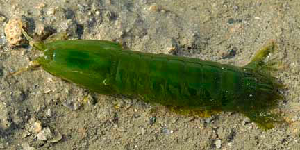
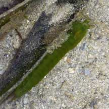
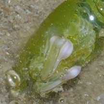
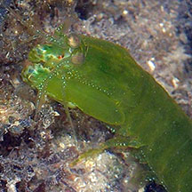

|
|
| mantis shrimps text index | photo index |
| Phylum Arthropoda > Subphylum Crustacea > Class Malacostraca > Order Stomatopoda |
| Smasher
mantis shrimp Gonodactylellus viridis Family Gonodactylidae updated Mar 2020 Where seen? This shrimp-like animal is sometimes seen on our Southern shores, near reefs and among seagrasses. More active at night, it zooms around rapidly and is hard to photograph. Elsewhere it is found in shallow waters, in upper intertidal zone in reef flats under rocks and boulder, or inside coral and rock crevices. It moves actively between coral heads hunting for prey. It was previously known as Gonodactylus chiragra. Features: 5-7cm long, up to 10.5cm long. Body long, cylindrical, plain with lines of white spots on the narrow tail. Males are dark green while females are whitish green. The huge front pincers are modified into clubs. These are used to bludgeon shelled prey. While snails and clams are simply dragged back to the burrow, crabs are often first immobilised by blows to the claws and legs. In the safety of the burrow, the victim's shell is further cracked. The blows of smasher mantis shrimp are so powerful that they have been known to break aquarium glass! |
 Pulau Semakau, Feb 09 |
 Hiding next to a seagrass blade. Pulau Semakau, Aug 07 |
 Pincers modified into smashing clubs. Sisters Island, Jun 07 |
 |
 |
*Species are difficult to positively identify without close examination.
On this website, they are grouped by external features for convenience of display.
| Spearer mantis shrimps on Singapore shores |
On wildsingapore
flickr
|
| Other sightings on Singapore shores |
 |
Links
|